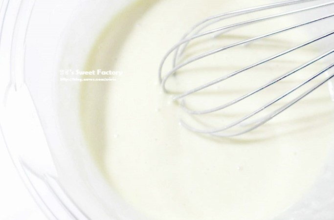
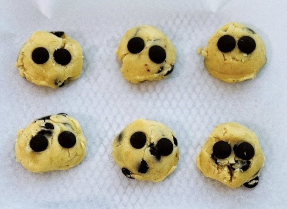

Home Baking Recipe
* 계란빵

재료 준비:
-6개 분량-
-핫케이크 믹스 150g
-달걀 7알
-우유 100ml
-파마산 치즈 가루 1Ts
-모짜렐라치즈 적당량
-올리브유 또는 녹인 버터 약간
그외)
-베이컨, 파슬리가루
-
Baking Start !
1단계 : 종이컵에 올리브오일 이나 녹인 버터를 약간 바르고 베이컨을 종이컵에 한장씩 두른다.
2단계 : 볼에 달걀 1알을 넣고 잘 풀어준 후 핫케이크 믹스 150g , 파마산 치즈가루 1큰술, 우유 100ml을 넣어준다.
3단계 : 가루가 보이지 않을 때까지 볼을 손거품기를 사용해 섞어준다.
4단계 : 6개의 각각의 컵에 만든 반죽을 3/1이상 넘지 않도록 부어준다.
5단계 : 그 위에 달걀을 1개씩 꺠서 올려준 후 굽는 도중 폭발하지 않도록 이쑤시개로 콕콕 터트려준다.
참고 블로그 이동6단계 : 기호에 맞게 모짜렐라 치즈 혹은 소금을 올려 에어프라이기에 넣고 170도 에서 15분 구워주면 완성된다.
-
Baking Start !

1단계 : 버터를 미리 상온에 30분 정도 꺼내 녹여 준 후 거품기로 저어주어 크림화한다.
2단계 : 마요네즈처럼 부드럽게 되면 설탕 50~60g(기호에 맞게 조절) 과 소금 2g을 2~3번 나누어 넣는다.
3단계 : 노른자 1개를 사용해 2번에 걸쳐 넣으며 저어준다. 그 다음 으로 물엿 5g을 넣어준다.
4단계 : 중력분 110g을 체에 한번 내려서 볼에 넣고 가루를 주걱을 이용해 섞어 준다.
5단계 : 주걱을 11자 모양으로 그리며 한 덩어리를 만든 후 만든 반죽에다 초코칩을 넣고 골고루 섞는다.
6단계 : 반죽을 냉장고에 30분 간 숙성한다.
7단계 : 숙성 완료 된 반죽을 아이스크림 스툽으로 하나 씩 떠서 동그란 모양으로 만든다.
참고 블로그 이동8단계 : 에어프라이기에 170도 13분 정도 구우면 완성된다.
-
Baking Start !
1단계 : 박력분 100g을 체 쳐준 후 설탕 10g 한 숟가락, 소금 조금 넣고 거품기로 잘 섞어준다.
2단계 : 이 후 잘게 썬 무염 버터 50g을 넣고 밀폐하여 냉장고에 30분간 냉장시킨다.
3단계 : 냉장이 끝 났으면 버터를 잘게 쪼갠다. 손으로 비벼면 더 잘게 만들 수 있다.
4단계 : 차가운 물 2숟가락 (20g)을 반죽에 넣고 가루를 뭉친다.
5단계 : 랩이나 비닐 위 반죽을 올리고 나누기 편하도록 길쭉하게 모양을 잡아 준 후 냉장실에 1시간 숙성시킨다.
6단계 : 생크림 반 컵, 우유 반 컵 (총 200g) 을 합쳐 전자레인지에 1분 돌려준다.
7단계 : 데운 우유에 설탕 5숟가락, 바닐라 익스트랙 1티스푼 을 넣고 녹이듯이 젓는다.
8단계 : 계란 노른자 4개를 먼저 그릇에 담아두고 우유를 부으면서 섞어준다.
9단계 : 섞은 우유를 체에 걸려주면 필링이 완성된다.
10단계 : 숙성 완료 된 반죽을 6등분 해준다.
11단계 : 머핀틀 과 은박 컵을 준비하고 틀에 반죽을 눌러가면서 펴주고 반죽이 부풀지 않도록 포크로 구멍을 뚫는다.
12단계 : 완성해둔 필링을 반죽 틀에 90% 정도 채워 넘치지 않게 한다.
13단계 : 오븐에 10분 예열 후 190도 30~35분 굽으면 완성된다.
참고 영상 이동
* 초코칩쿠키
재료 준비:
-10~11개 분량 / 지름 7~8cm-
-무염버터 60g
-설탕 60g
-소금 1g
-물엿 5g
-달걀 25g
-중력분 110g
-베이킹소다 2g
-초코칩 70~80g
-시나몬파우더 5g
* 에그타르트

재료 준비:
- 6개 분량
| 타르트지 재료 |
- 박력분 100g / 한 컵
- 무염버터 50g
- 설탕 10g / 1 숟가락
- 찬물 20g / 2숟가락
- 소금 조금 1g
| 필링 재료 |
- 노른자 3~4개
- 생크림 100g / 반 컵 (우유로 대체가능)
- 우유 100g / 반컵
- 설탕 50g / 5 숟가락
- 소금 조금
+ 바닐라익스트랙 1티스푼 (생략가능)